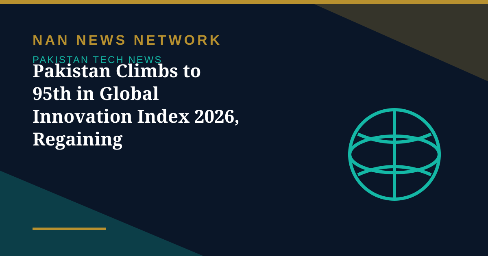

Pakistan Climbs to 95th in Global Innovation Index 2026, Regaining 'Overperformer' Status

Pakistan's position in a recent ranking of innovation outputs is a quiet but telling illustration of the country's potential, The Express Tribune said in an editorial on October 31: the country rose to 95th in the Global Innovation Index 2026, regaining 'overperformer' status in the World Intellectual Property Organisation's ranking of 139 economies.
Outputs ahead of inputs
Pakistan ranked 121st on innovation inputs but 72nd on outputs — a gap that suggests the country produces more innovation than its investment levels would predict. The country ranks 10th globally in mobile-app creation relative to GDP, 15th in ICT services exports and 19th in high-tech imports, according to the editorial's reading of the index.
The other side of the ranking
The same index places Pakistan near the bottom on human capital, research and infrastructure. Research and development spending is just 0.16% of GDP, patent filings lag badly, and startup funding — already modest by international standards — has crashed, the editorial noted. The lesson it draws is that the talent and output are there; what is missing is the investment in research, skills and infrastructure to sustain them.
Sources: Express Tribune editorial, Global Innovation Index 2026 (WIPO), October 31, 2026
More on Pakistan Tech News
- Pakistan's Cyber Emergency Team Warns of Spyware That Can Infect Phones Through Online Ads
- Pakistan Launches New E-Passport With Chip, NFC and Biometric Security
- Pakistan Targets 50% Local Value Addition in Mobile Phone Manufacturing
- PTA Fines Mobile and Internet Firms Over Rs3.41 Billion Over Consumer Complaints
- PTA Warns of Rising 5G Security Risks as Cyber Alerts Top 10,000
- Pakistan Internet May Slow Until November 2 as AAE-1 Cable Undergoes Repairs
- PM Sets November Deadline for Alibaba-Backed AI and Digitalisation Projects
- Pakistan's 5G Now Reaches 24 Cities After $509 Million Spectrum Auction
- Pakistan Announces Urdu AI Model 'Buraq' to Keep National Data at Home
- PM Launches Two-Year Drive to Give 500,000 Chromebooks to Talented Students
- Pakistan to Host UN Space Technology Conference on Early Warnings and Climate Action
- PAK-US Tech Connect 2026 Takes 16 Pakistani Tech Firms Across America
- Pakistan Wins 11 Awards at the ASOCIO Digital and AI Awards 2026
- Pakistan Showcases AI Innovations at Abu Dhabi's AI Everything Global 2026